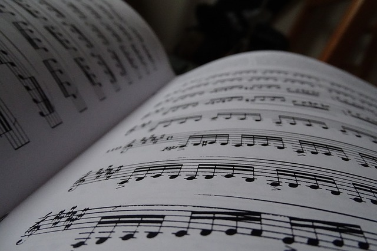
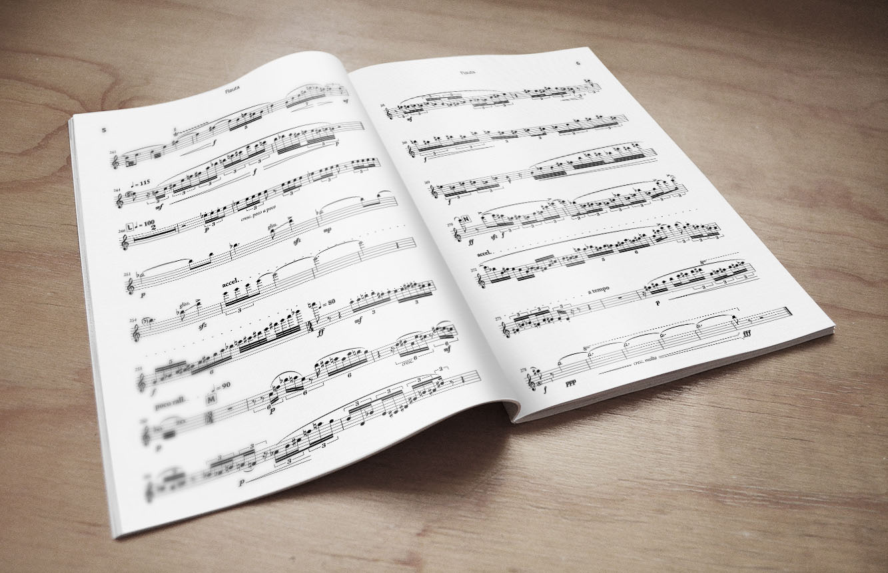
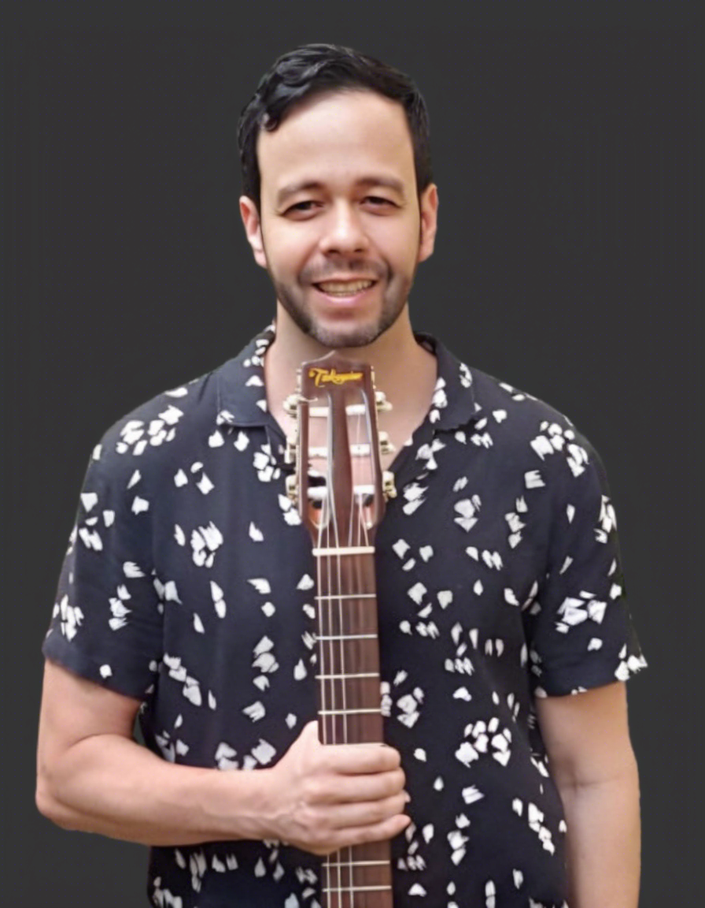
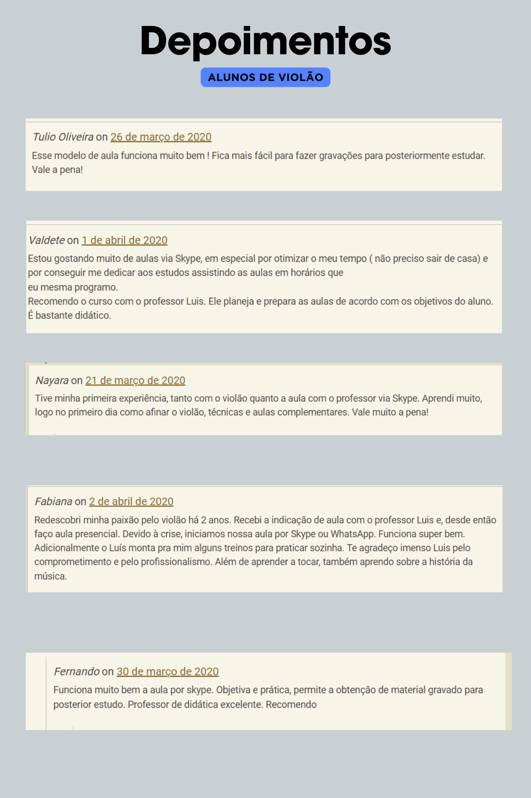
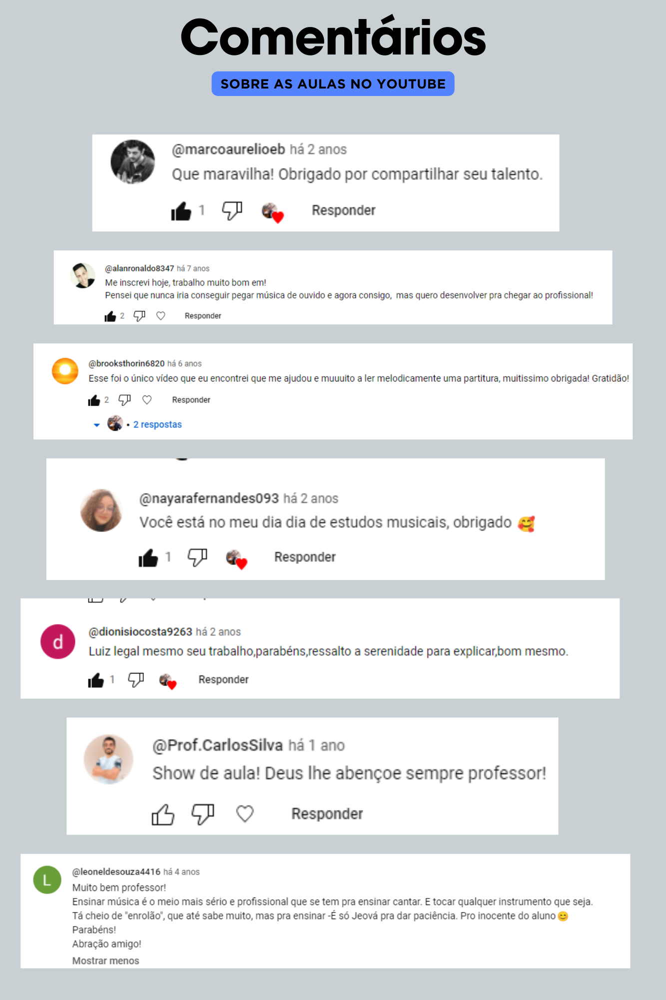

Sobre as Aulas

Aulas de Violão em São Paulo: Transforme sua Paixão em Música!
Descubra o prazer de tocar violão com aulas personalizadas que se adaptam ao seu ritmo e estilo
musical.
Em poucos meses, você estará dominando suas músicas favoritas e encantando todos
ao seu
redor com sua habilidade única.
Minhas aulas são cuidadosamente planejadas para garantir que você não apenas aprenda, mas também se
divirta ao longo do caminho.
Do básico ao avançado, vamos construir juntos uma base sólida
de
conhecimento musical que o capacitará a se destacar como um músico completo.
Não espere mais para realizar seus sonhos musicais. Comece hoje mesmo sua jornada de aprendizado de violão e descubra o prazer de fazer música no conforto da sua própria casa.
Clique no botão abaixo para dar o primeiro passo!
Marcar Aula Experimental
Método - O que o aluno iniciante vai aprender

Teoria Musical
- ✔ Começando com o Básico: Primeiro, vamos aprender os nomes das notas no violão. Em seguida, vamos conhecer as figuras de ritmo básicas, como semínimas e mínimas.
- ✔ Explorando os Intervalos: Vamos descobrir o que são intervalos e como reconhecê-los no violão.
- ✔ Acordes e Escalas: Agora, vamos aprender alguns acordes básicos e começar a explorar escalas simples.
Técnica Instrumental
- ✔ Postura e Dedilhado: Vamos começar com a postura correta do corpo e dos dedos. Em seguida, praticaremos alguns exercícios simples de dedilhado para melhorar a coordenação.
- ✔ Arpejos e Coordenação: Vamos aprender arpejos básicos e trabalhar na coordenação entre as mãos.
- ✔ Exercícios para Ambas as Mãos: Aqui, vamos praticar exercícios que envolvam tanto a mão esquerda quanto a direita.
Harmonia
- ✔ Construindo Progressões de Acordes: Vamos estudar progressões simples de acordes e como eles se relacionam.
- ✔ Também vamos começar a analisar algumas músicas simples para entender seus acordes.
- ✔ Substituição de Acordes e Improvisação: Agora, vamos explorar como substituir acordes para tornar as músicas mais interessantes.
- ✔ Improvisação: Além disso, vamos experimentar um pouco de improvisação básica usando as escalas que aprendemos.
Estudo de Repertório
- ✔ Violão Solo: Começaremos a estudar algumas peças de violão solo para praticar nossa técnica e expressão.
- ✔ Violão Acompanhamento: Juntos vamos selecionar algumas músicas do seu gosto musical e aprender os padrões de acompanhamento para tocá-las.
- ✔ Explorando Novos Estilos: Vamos ampliar nosso repertório explorando diferentes estilos musicais, como clássico, folk, mpb, reggae, blues, etc.
- ✔ Desafio Pessoal: Escolha uma peça de violão solo ou uma música para acompanhar que seja um pouco desafiadora para você e trabalhe nela ao longo das próximas semanas.
Marcar Aula Experimental
Método - O que o aluno intermediário vai aprender

Teoria Musical
- ✔ Explorar intervalos avançados e acordes estendidos.
- ✔ Praticar escalas modais e leitura musical mais complexa.
- ✔ Aprofundar o estudo de escalas modais.
- ✔ Desenvolver habilidades de leitura avançada.
Técnica Instrumental
- ✔ Estudar dedilhado avançado e padrões rítmicos.
- ✔ Praticar técnicas de ligados e trinados para maior expressividade.
- ✔ Dominar técnicas de ligados e trinados.
- ✔ Aplicar técnicas avançadas em músicas do repertório.
Harmonia e Percepção Musical
- ✔ Explorar progressões avançadas de acordes.
- ✔ Praticar treinamento auditivo para identificação de acordes e melodias.
- ✔ Aprofundar a improvisação sobre progressões complexas.
- ✔ Transcrever músicas de ouvido para o violão.
Estudo de Repertório
- ✔ Estudar peças intermediárias de violão solo.
- ✔ Explorar padrões de acompanhamento avançados.
- ✔ Ampliar o repertório com peças intermediárias em diferentes estilos.
- ✔ Enfrentar um desafio pessoal escolhendo uma peça mais difícil para dominar.
Sobre o Professor

Olá, sou Luis Abranches, professor de violão e guitarra há mais de duas décadas. Minha jornada musical começou nas principais escolas de música de São Paulo, como a EMESP (Escola de Música do Estado de São Paulo), Escola Municipal de Música e Faculdade Cantareira.

Ao longo dos anos, busquei aprimorar minha técnica e conhecimento participando de cursos livres na EMESP, como o renomado "Pixinguinha na Pauta" e "Prática de Choro". Durante esse tempo, tive a oportunidade de me apresentar como violonista e cantor em diversos locais, desde teatros até bares, restaurantes e eventos.

Minha paixão pela música e pela arte de ensinar me impulsiona a compartilhar meu conhecimento e experiência com meus alunos. Se você está buscando aprender violão ou guitarra, desde os primeiros acordes até técnicas mais avançadas, estou aqui para ajudar. Vamos embarcar juntos nessa jornada musical e alcançar seus objetivos!
Quais formatos de aula você pode fazer

Aulas Mensais
Aulas semanais, uma aula por semana, com 1h de duração.
Em dupla, dois alunos por aula, com o mesmo valor de investimento.
Consulte o valor
Aulas Quinzenais
Aulas quinzenais, 1 aula a cada 15 dias.
Em dupla, dois alunos por aula, com o mesmo valor de investimento.
Consulte o valor
Aulas Avulsas
Aulas avulsas, o valor do investimento é cobrado por aula.
Em dupla, dois alunos por aula, com o mesmo valor de investimento.
Consulte o valor
Aulas Online
Por vídeo chamada. Aplicam-se as três condições dos planos anteriores: Semanal, Quinzenal ou Avulso.
Em dupla, dois alunos por aula, com o mesmo valor de investimento.
Consulte o valor
Aulas em Grupo Online
Aulas online, por vídeo chamada.
Em grupo com limite de 8 pessoas, investimento mais baixo em relação aos outros formatos de aula.
Consulte o valor
O que os alunos falam das aulas

O que os seguidores falam das aulas

Marcar Aula Experimental